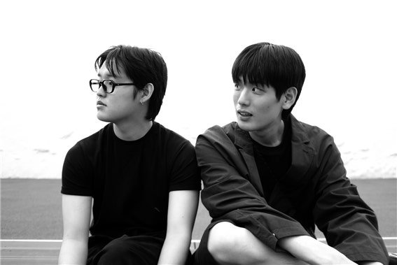
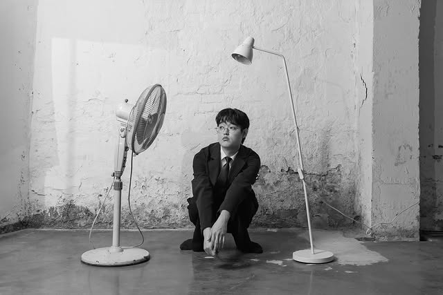
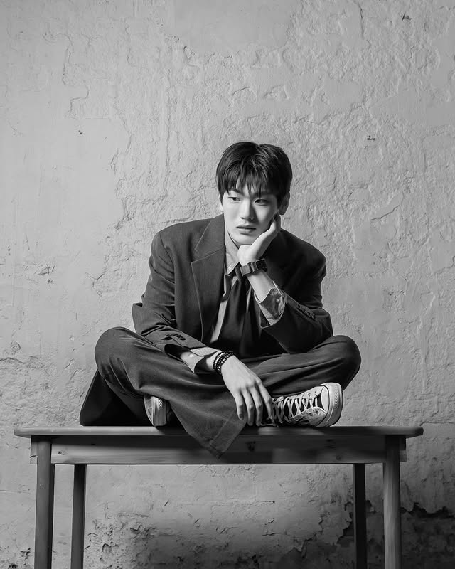

소개
소개

산처럼 커다라면서도, 주의없이 산만하게
산만한시선은 다큐멘터리 제작에서부터 시작된 팀입니다. 산처럼 커다라면서도, 주의없이 산만하게" 라는 - 주제의식을 가지고 저희 둘만의 산만하고 가난한 시선들을 영상으로 만들어내고자 결성된 집단이었습니다만, 프로젝트를 시작하며 "일단 영상에 들어갈 음악부터 만들어 놓고 시작할까?" 했던 문장이 쌓이고 쌓이더니 노래가 되었고 그런 산만한 행동들이 어쩌다 보니 지금의 산만한시선이 되었습니다. 저희 둘이 노래하고자 하는 영역은 늘 생활에 있습니다. 산만하고 가난한 생각들을 가능한 솔직하고 소심하게 만들어내고. 그런 별것도 아닌 것들을 잘 모아서 익숙한 장면들을 만들어내려고 합니다. 듣는 음악을 넘어서, 볼 수 있는 음악을 부르고 만들어낼 수 있기를 바라며.
멤버

서림 2000.03.03

송재원 2000.11.28